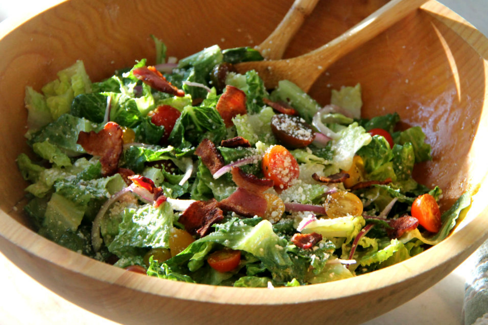

Facon Summer Salad

Summer Salad with Facon and Avocado
Ingredients
- Lettuce 🥬
- Cherry Tomatoes 🍅
- Cucumber 🥒
- Carrot 🥕
- Avocado 🍆
- Mint 🌿
- 2 Rashers of Facon 🥓
Method
- Fry the facon for 2 minutes on either side
- While cooking, roughly chop the lettuce
- Dice the cucumber and avocados
- Halve the cherry tomatoes
- Shred the mint leaves
- Pour the cider vinegar over the salad
- Mix salad together
- Roughly chop facon and sprinkle over the salad